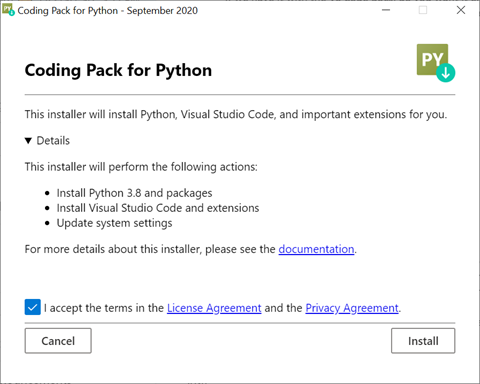
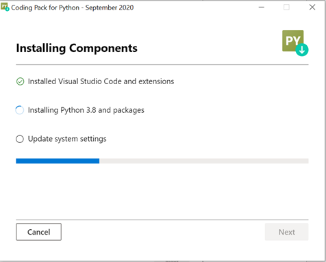
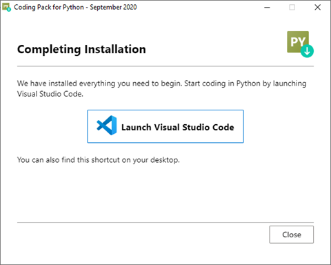
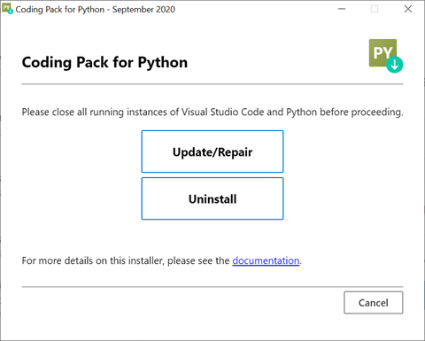
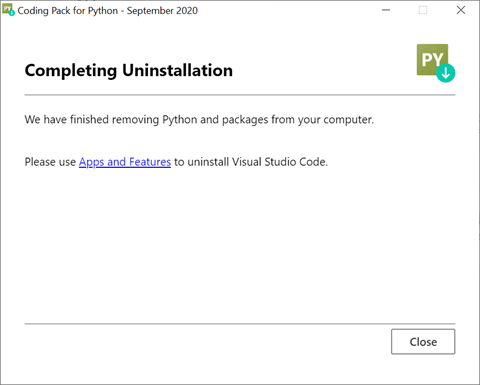

Coding Pack for Python
The Coding Pack for Python helps you quickly set up a Python coding environment with Visual Studio Code. The standalone installer helps you install a Python interpreter, Visual Studio Code, extensions that provide support for Python in Visual Studio Code, and a number of common and useful Python packages.
Getting started
With the Coding Pack for Python, it's easy to get started developing with Python and VS Code.
Download and run the Coding Pack for Python installer.
Note: The installer only supports Windows 10 64-bit. This download is 200MB, and up to 100MB will be downloaded while you are installing.
Once the installer launches, review and accept the License Agreement. Then select Install.

After installation completes, select Next.

Note: If you select Cancel before the installation completes, you will need to manually remove and uninstall any components that have already been installed.
Launch Visual Studio Code and start coding!

Note: If there are any issues installing components, you can use the steps discussed in Manual installation
What's installed by the Coding Pack for Python
The Coding Pack for Python installs the key components you need to use Visual Studio Code for Python development. Specifically, it installs:
- Visual Studio Code
- Visual Studio Code extensions:
- Python
- Pylance
- Live Share
- Gather
- The Python runtime (CPython 3.8.5)
- Useful Python packages
- jupyter
- numpy
- sklearn
- pandas
- Matplotlib
Along with the tools and packages necessary for Python development, the Coding Pack also configures common user settings and PowerShell. This includes Python extension settings, such as the default interpreter and language server, as well as execution policies to allow for virtual environment activation in the terminal.
Note: If there was an existing version of Visual Studio Code installed on your machine, your settings.json will not be overwritten and you'll need to configure Python settings yourself.
Manual installation
If you have any problems during installation, the following manual steps can be used to complete your installation.
Visual Studio Code and the Python extension
If there was an issue installing VS Code, you can install it from here.
Once VS Code is installed, you can install the Python extension for VS Code from the Visual Studio Marketplace. For additional details about installing extensions, see Extension Marketplace. The Python extension is named Python and is published by Microsoft.
Python interpreter
If there was an issue installing the Python interpreter, you can install Python 3.8 from the Microsoft Store. Along with the Python extension, you need to install a Python interpreter for development with Python. There are other options for installing the Python interpreter, such as directly from Python.org, and which interpreter you use is dependent on your specific needs. If you use the Python.org version, just make sure to uncheck the "Install launcher for all users" box if you don't have admin access.
Note: If you use the Microsoft Store installation option, be aware that some packages might not work well with this package; however, the packages listed below have been tested and work fine.
For additional information about using Python on Windows, see the VS Code Python documentation and Using Python on Windows at Python.org.
- Verify your Python installation by opening a cmd prompt and running the following code
python --version. If the installation was successful, the output window shows the version of Python that you just installed.
Additional VS Code extensions
Pylance language server extension
Pylance is an extension that works alongside Python in Visual Studio Code to provide performant language support. Under the hood, Pylance is powered by Pyright, Microsoft's static type checking tool. Using Pyright, Pylance can supercharge your Python IntelliSense experience with rich type information, helping you write better code faster.
- Install the Pylance extension from the Visual Studio marketplace.
- Open a Python (.py) file and the Pylance extension will activate.
- Select Yes when prompted to make Pylance the default language server. This will update your preferences, which you can also do manually by adding
"python.languageServer": "Pylance"to your settings.json file using the text editor.
Gather extension
The Gather extension adds the experimental Gather feature to the Python extension. With one button, you'll be able to select any notebook or Interactive Window cell and have Gather find and then copy all of the dependent code that was used to generate that cell's result into a new notebook or script.
- Install the Gather extension from Visual Studio marketplace.
Live Share extension
Visual Studio Live Share enables you to collaboratively edit and debug with others in real time, regardless of what programming languages you're using or app types you're building. It allows you to instantly share your current project, and then as needed, share debugging sessions, terminal instances, localhost web apps, voice calls, and more! For additional details, see the documentation.
- Download and install the Visual Studio Live Share extension from the Visual Studio marketplace.
- Follow the guidance in the documentation about How-to: Collaborate using Visual Studio Code
Common Python packages
If you need to manually install the Python packages that the Coding Pack would otherwise have installed, you can do so using the following Python commands.
python -m pip install matplotlib
python -m pip install pandas
python -m pip install scikit-learn
python -m pip install matplotlib
python -m pip install jupyter
Be aware that these commands will install the packages into the global environment for your interpreter, because that's where the Coding Pack would have installed them. That said, a good option to consider is adding the packages to a virtual environment. For information about virtual environments, see the topic Using Python environments in VS Code.
Note: If you have problems running the Python commands above, you might need to make sure that the Python interpreter is on your PATH environment variable.
Settings and configuration
To help you get started quickly, the Coding Pack for Python sets a few key settings. If you need to configure them manually, you can use the following guidance.
Set default interpreter
- Open VS Code
- Within VS Code, open the Command Palette (ctrl+shift+p)
- Select Python: Select Interpreter
- Select the interpreter that you installed or that was installed by the Coding Pack
Set language server to pylance
- Install the Pylance extension and set it as the default language server as described in the section above.
Enable running scripts in PowerShell
- Open VS Code
- If a terminal is not already opened, select Terminal > New Terminal from the main toolbar
- Once the terminal has opened, enter the following command:
Set-ExecutionPolicy -Scope CurrentUser -ExecutionPolicy RemoteSigned
Uninstalling the Coding Pack for Python
If you need to uninstall (or repair) your Coding Pack for Python installation, you can use the following steps.
Rerun the standalone installer.
At the UI prompt, select Uninstall.

Once you select uninstall, the following tasks will be performed:
- The folder with the Python interpreter and associated Python packages will be removed, including any user installed packages.
- The folder will be removed from the PATH environment variable.
- Any settings modified by the installation process will be reset.

Note: The uninstall process will not remove Visual Studio Code. At the end of the uninstall process, you can click the provided link to open "Apps & features" to uninstall Visual Studio Code. If you decide to repair your installation, be aware that any other Python packages you might have installed will be removed as part of the repair process.